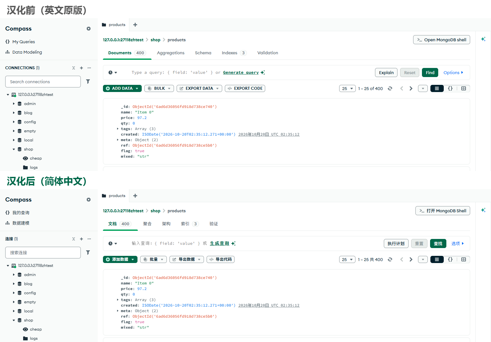
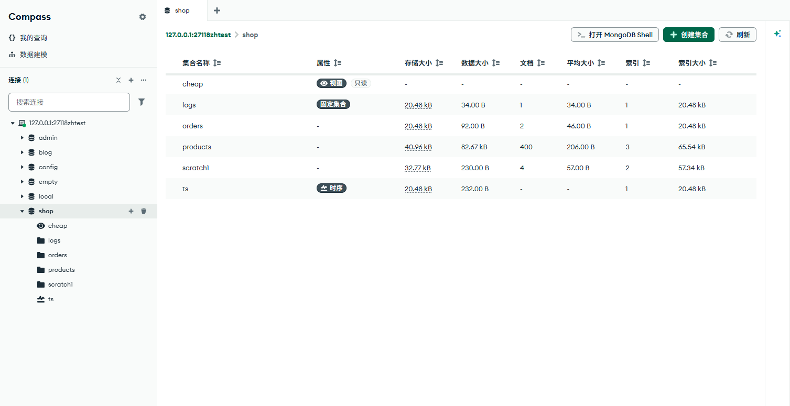

MongoDB Compass 汉化中文版
MongoDB Compass 没有语言设置，界面只有英文。这个开源补丁工具一条命令就能把 Compass 1.53 换成简体中文，随时可以一键还原。

汉化了哪些地方
- 欢迎页、侧边栏、连接列表和右键菜单
- 新建/编辑连接，含全部高级选项：认证、TLS、SSH、代理、加密等
- 设置的全部标签页
- 集合页：文档、聚合、架构、索引、验证
- 导入导出、执行计划、批量更新/删除、数据建模、性能页、内置 MongoDB Shell 面板、AI 助手
- 原生菜单栏、页签标题、提示和报错文案
词典约 1450 条，外加 600 多条精确替换规则。有意保留英文的：MongoDB、Atlas、TLS 等品牌和技术名词，代码示例，你自己的数据，以及服务器返回的错误信息。

怎么用（Windows）
先安装 Node.js（18 或更新），然后：
git clone https://github.com/Carytrue/mongodb-compass-zh-cn.git
cd mongodb-compass-zh-cn
node bin/compass-zh.js info # 检查检测到的 Compass 版本
node bin/compass-zh.js install --dry # 先试跑，只看匹配情况，不写文件确认没问题后，完全退出 Compass（包括托盘里的后台进程），再安装：
node bin/compass-zh.js installinstall 会先把原版 app.asar 备份为 app.asar.orig，再以这份备份为输入生成汉化版并覆盖。想还原：
node bin/compass-zh.js restore常见问题
支持哪些版本？ 目前只在 Compass 1.53.0 / Windows 11（Squirrel 安装版）上验证过。其他版本的压缩代码会变，部分规则会失效；工具会显示词条匹配率，低于 60% 会拒绝安装。macOS 版带有 asar 完整性校验，直接修改很可能无法启动，未测试。
Compass 更新后又变回英文了？ 自动更新会生成新的版本目录，新版是英文。重新运行 install 即可（新版本先用 --dry 看匹配率），也可以在 Compass 设置里关闭自动更新。
会影响我的数据吗？ 不会。汉化只改界面文字，不动连接、数据和配置。出问题可以 restore，或重新安装 Compass。
工作原理？ Compass 是 Electron 应用，界面文案写死在 resources/app.asar 里压缩过的 JS 中。工具读取你已安装的 app.asar，按词典只在确认是显示文字的位置把英文换成中文，对每个被改动的文件做语法检查后写回。仓库里不包含任何 Compass 程序文件。
发现还有英文或排版错位？ 欢迎到 GitHub Issues 反馈，词典是简单的 "英文": "中文" JSON，也欢迎直接提 PR。
非官方项目，与 MongoDB, Inc. 无关。“MongoDB”“Compass”是 MongoDB, Inc. 的商标，这里仅用于说明本工具适用的软件。仓库代码和词典使用 MIT 许可；Compass 本身遵循其自身的许可条款（SSPL），请不要分发汉化后的 app.asar。